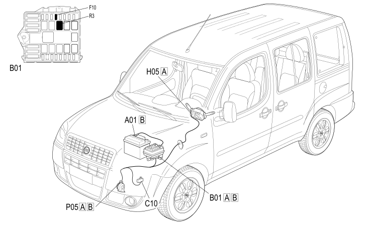

E3010 HORNS - COMPONENT LOCATION
- Path
- Electrical equipment > 1 ELECTRICAL FUNCTIONS > E30 ELECTRICALLY ACTIVATED DEVICES > E3010 HORNS > E3010 HORNS - COMPONENT LOCATION
- Kind
- component location drawing
- Applies to
- engines: 1.4 8v, 1.6 16v, 1.3 JTD 16V, 1.9 JTD 8V; production: da 12/03; only with equipment: MY 2005
- Interactive page
- https://sloeber94.github.io/elrnDB-fDbl/en/#/223001837
Applies to: engines: 1.4 8v, 1.6 16v, 1.3 JTD 16V, 1.9 JTD 8V; production: da 12/03; only with equipment: MY 2005

Component code | Description | Reference to the assembly |
|---|---|---|
JUNCTION UNIT | ||
LEFT FRONT EARTH | ||
STEERING COLUMN SWITCH UNIT | ||
SINGLE-TONE HORN |